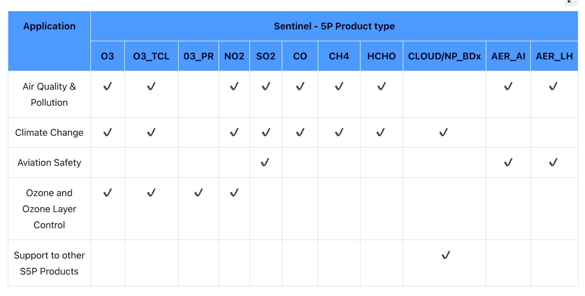
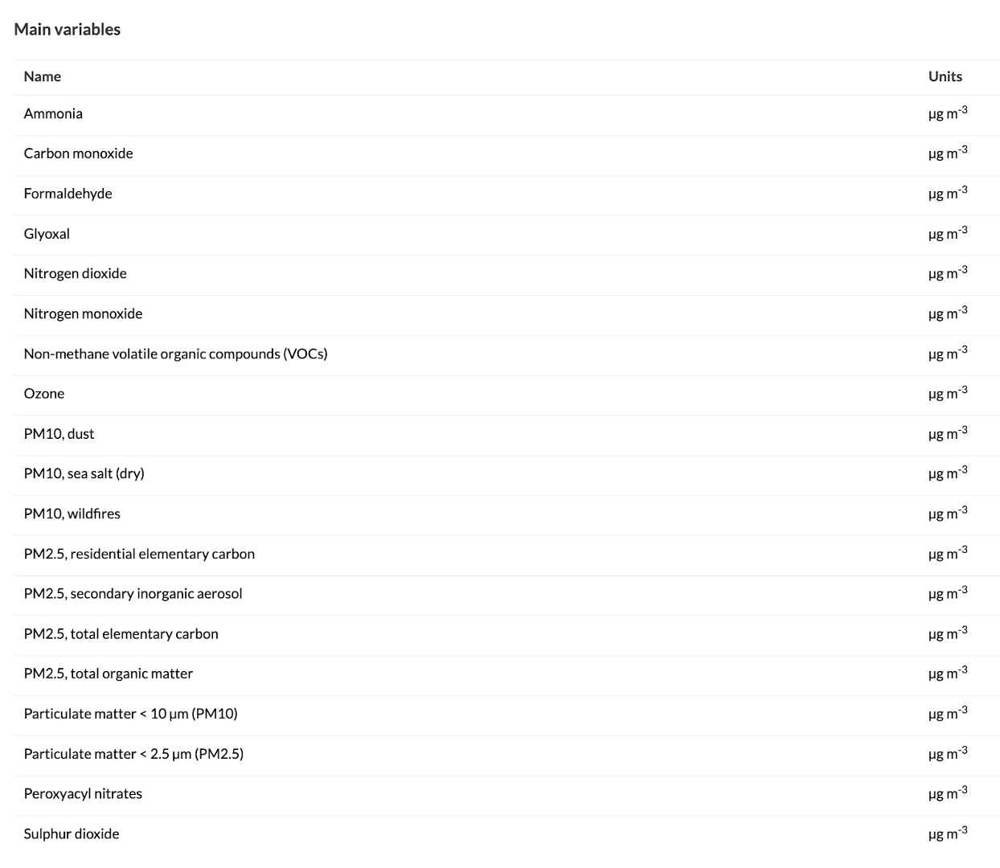

4 Week 4 - Policy
4.1 Summary
This week we’ve been asked to look into a policy challenge that could benefit from or be mitigated by the use of remote sensing data. I have decided to look at London as it’s the city I have the most knowledge of / 1st hand experience in as I’ve lived here for the last 10 years. Greater London Authority is the main London level administrative body that makes policy for London alongside The Mayor of London’s office. They published a 20 - 25 year document called the London Plan 2021 (subsequently referred to as The Plan) which looks to set out their ambition and framework for how they would like London to develop over the next couple of decades (the plan is a detailed and runs to well over 500 pages) (Greater London Authority, 2021). Within The Plan there are two policy challenges that I think are interesting based on my experience, namely, concerns around urban heat and pollution on streets. Specifically “Policy SI 1: Improving Air Quality” feels like something that remote sensing data should be able to support the monitoring of as well as support intervention decisions or evaluate the efficacy of specific interventions like The Ultra Low Emission Zone (ULEZ) or Low traffic neighbourhoods. According to the London Assembly London has more than 300 sites that are used to monitor pollution levels throughout the city (linked here), however there are gaps as these sites do not monitor all of the most harmful pollutants that some remote sensing satellites such as Sentinel 5P, with a spatial resolution of 7 km x 3.5km, do monitor such as sulphur dioxide released by Industrial manufacturing (Sentinel5P specifications) this could also be competed by working with CAMS data which although running at a resolution of 10km x 10km.
Pollutants monitored by Sentinel5P (source):

CAMS data monitored (source):

4.2 Application
This week I decided to focus on reading a paper that looked at air quality given the policy around air quality I’ve been considering as a policy that could be informed by the use of remote-sensing. The paper I read was focused on understanding the relationship between sentinel air quality readings and ground readings in Lombardy in Northern Italy before and during the COVID-19 outbreak (Oxoli, Cedeno Jimenez and Brovelli, 2020). The researchers used Pearson correlation as well as Spearman rank correlation to measure the strength of this relationship. They identify that correlation is strongest during time periods in which both the satellite pass over is aligned with ground reading, as opposed to say looking at cumulative nitrogen levels within a larger time period like a month. Interestingly they find that correlations are best between satellite and ground truth readings in plains and urban environments as opposed to mountainous terrain which showed the poorest relationship. They also conclude that as Spearman correlation shows the strongest relationship relative to Pearson correlation, that people looking to estimate ground truth emissions should consider the use of non-linear models first as Spearman correlation, a method that disregards the assumptions around linearity shows the strongest relationship.
4.3 Reflection
Given that satellite data usage has little to no stand up cost, and is relatively readily available it is surprising how little it forms the basis for analysis. Perhaps in cities like London with adequate resources to have a large number of if existing monitoring stations in place already it may be easier to access adn use ground station / location data as this is easier to access and provides more granular readings. As the resolution of the latest and best satellite for air quality monitoring , Sentinel-5P, has been designed for global monitoring it has a resolution of 7km x 3.5km which means for London the entirety of the city would be monitored by 4-10 pixels, which does not provide any additional benefit in terms of spatial resolution / granularity for analysis. This perceived lack of granularity may be serving as a deterrence to its adoption despite it offering complementary monitoring capability.
Given the Lombardy paper was able to demonstrate a correlation between satellite nitrogen readings adn ground level nitrogen levels of 0.75 suggests that remote-sensing data could be used to estimate ground Nitrogen levels in areas without existing / extensive ground monitoring capabilities. In addition, I believe GHGSAT a green house emissions remote sensing company is able to provide very high resolution emissions data on other indicators of air quality like Methane and Carbon Dioxide, which state organisation like the GLA are able to access free of charge under a scheme (linked)
4.4 References
Greater London Authority (2021) The London plan: the spatial development strategy for Greater London, March 2021. London: Greater London Authority. Available at: https://www.london.gov.uk/sites/default/files/the_london_plan_2021.pdf.
Oxoli, D., Cedeno Jimenez, J.R. and Brovelli, M.A. (2020) ‘ASSESSMENT OF SENTINEL-5P PERFORMANCE FOR GROUND-LEVEL AIR QUALITY MONITORING: PREPARATORY EXPERIMENTS OVER THE COVID-19 LOCKDOWN PERIOD’, The International Archives of the Photogrammetry, Remote Sensing and Spatial Information Sciences, XLIV-3/W1-2020, pp. 111–116. Available at: https://doi.org/10.5194/isprs-archives-XLIV-3-W1-2020-111-2020.